Head of UX · Senior Product Designer
JOHN
JURVANEN
Twelve years owning UX end-to-end, across AI-powered industrial and operator-facing products where design decisions have direct operational consequences.
I enjoy building enough domain depth to be a real thought partner to engineering, product, sales, and marketing alike, keeping every function aligned, and leveling up the teams around me.
The engineering background means the work is always grounded in what can actually be built and communicated effectively.
What I bring to the table
The Work
Measured
"John combines strong design thinking with a deep understanding of product and implementation realities. He is highly collaborative, customer-focused, and a pleasure to work with. I would confidently recommend him for lead UX/UI roles, especially in complex, industrial or B2B product environments."

"John is truly a great asset to any software team as a full stack developer or in a designer role. During his time at Mapvision, he took our UI/UX design and the processes behind it to a new level.
He is also very customer oriented and always interested to learn how the customers are using his designs."

"John has truly been an amazing multi-disciplinary team player in our development team. We were convinced from the first programming assignment, and from there on John first delivered excellent software development skills, and later on started leading our UX efforts, creating amazing Figma prototypes that leave both product owners and customers begging for more."

"He is dependable, consistently delivered in sprints and contributes to technical discussions while always keeping long-term user impact in mind through clear use cases and flows. He balances user needs with practical implementation and saves teams significant time by clarifying flows early, reducing rework."
"He collected early feedback from customers via prototyping and questionnaires, leading to multiple succsesfull product launches. His insights into designs include his knowledge of implementation limitations, and have provided easy to implement UX to features whether completely new or improvements to existing ones."
"John combines strong design thinking with a deep understanding of product and implementation realities. He is highly collaborative, customer-focused, and a pleasure to work with. I would confidently recommend him for lead UX/UI roles, especially in complex, industrial or B2B product environments."
"John is truly a great asset to any software team as a full stack developer or in a designer role. During his time at Mapvision, he took our UI/UX design and the processes behind it to a new level.
He is also very customer oriented and always interested to learn how the customers are using his designs."
"John has truly been an amazing multi-disciplinary team player in our development team. We were convinced from the first programming assignment, and from there on John first delivered excellent software development skills, and later on started leading our UX efforts, creating amazing Figma prototypes that leave both product owners and customers begging for more."
"He is dependable, consistently delivered in sprints and contributes to technical discussions while always keeping long-term user impact in mind through clear use cases and flows. He balances user needs with practical implementation and saves teams significant time by clarifying flows early, reducing rework."
"He collected early feedback from customers via prototyping and questionnaires, leading to multiple succsesfull product launches. His insights into designs include his knowledge of implementation limitations, and have provided easy to implement UX to features whether completely new or improvements to existing ones."
Project at Mapvision · 2025 - 2026
Weld Seam
Inspection
On an automotive production line, stopping a part to inspect a weld seam costs time the line does not have. Traditional inspection systems forced a choice between coverage and throughput.
I owned the operator-facing experience from research through launch and post-launch iteration. The central challenge was training the model, reviewing flagged welds, and overriding evaluations all needed to happen in seconds, naturally, all fitting naturally alongside existing workflow. I validated every interaction directly with automotive OEM customers and internal teams before a single line of production code was written.
The result was a system that delivered 100% weld coverage without adding floor space. When the business needed more than AI based anomaly detection, the UX was ready for defect classification.
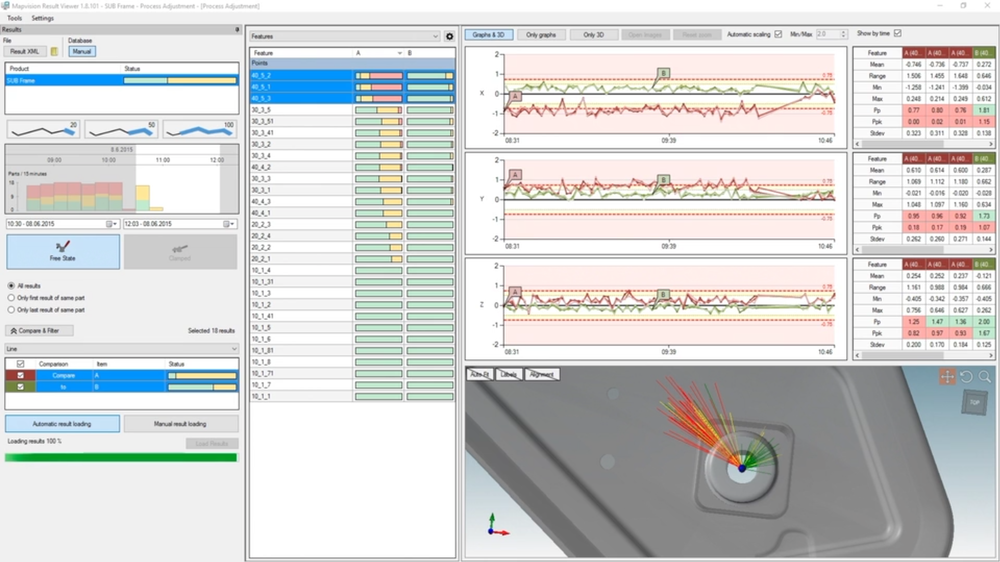
Project at Mapvision · 2020 - 2026
Mapvision
Result Suite
Automotive manufacturers collect enormous volumes of inspection data. The problem was data needed to tell three completely different stories; operators on the floor needed to act on defects in seconds, managers needed to spot trends across shifts, and executives needed reports that justified decisions at a glance.
I built the function around them. Configurable dashboards, clear statistical views, and error-vector visualization, all designed around the mental models of the people who actually used them, not the data structures behind them.
Result was zero development rework from design misalignment across the entire tenure. Prototypes that were production-accurate enough to close sales conversations and brief the board. A design process tight enough that engineering never had to wait for clarity, and clarity never arrived too late to matter.
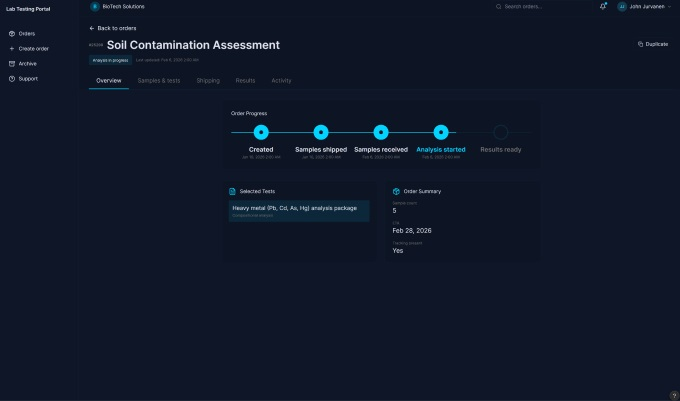
- · 2026
Laboratory
Sample Tracking
Businesses that send physical samples for analysis do not want to manage laboratories. They want to send samples and get results.
I owned the problem end-to-end. The design started with one question: what does a user actually need to know the moment they land on the page? The answer shaped everything. A status-first dashboard replaced the traditional table view. A two-level taxonomy filter mirrored how users actually think about tests. A duplicate order flow turned a ten minute task into seconds. Every core interaction was rebuilt around the user's mental model, not the database structure behind it.
Order creation time dropped by 80%. Repeat orders became 3x faster.
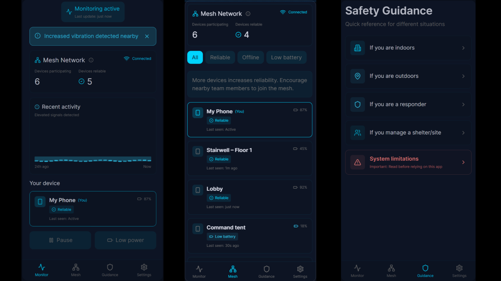
Project at Ajeco Oy · 2017–2019
Secondary Seismic
Mesh Detection
In the hours after a major earthquake, aftershock risk is highest, connectivity is gone, and the people who need warnings most are already operating at their limit.
In this side project the design challenge was building trust without false precision, for stressed users with gloves in noisy, low-connectivity environments. Every degraded state, dead battery, lost connection, unreachable device, was treated as a first-class product condition, not an edge case. An alarm only triggers when a cluster of nearby devices agrees the pattern is regional, not footsteps, generators, or local vibration.
Owned end-to-end from research and interviews to IA, flows, and high-fidelity UI, scoped to a focused and testable MVP.
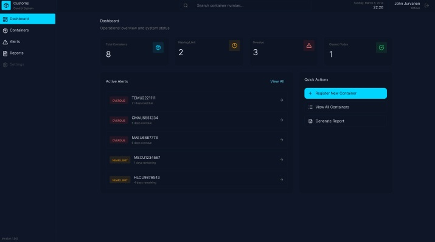
Project at Bimar · Arkas Holding · 2015
Container
Storage Tracking
Freight forwarders at borders were tracking containers on paper, under time pressure, on shared workstations, with no reliable internet. A missed overdue container meant legal penalties.
I owned the problem end-to-end. The design philosophy was simple: make the right action the easiest action. Status-first UI, passive compliance surfacing, and ISO 6346 validation embedded directly into the entry flow so errors couldn't happen at source.
Overdue container incidents dropped from 3 - 5 per month to zero.
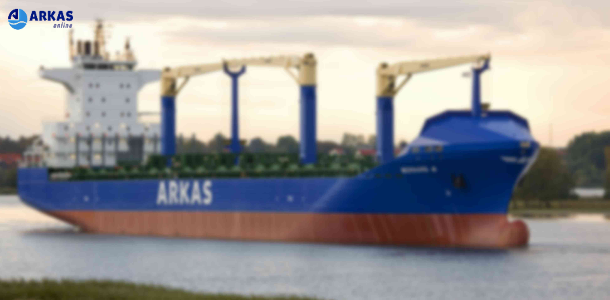
Project at Bimar · Arkas Holding · 2013 - 2015
New Age
Agency (YNA)
Worked as a frontend developer
Shipped features and improvements on an enterprise logistics platform serving thousands of users across multi-region operations in Europe and Africa. Built internal tooling from scratch, including document retrieval and organization tools adopted across secretarial, management, and development teams, reducing day-to-day operational friction. Owned initiatives end-to-end from scoping through delivery across distributed teams, growing in role through demonstrated delivery.
12 years of building
Career Arc
Enterprise B2B Logistics
Independent E2E
B2G · Telemetry · Maritime
B2B SaaS · Machine Vision
B2B SaaS · AI Inspection
About me
Always Ready
People I've worked with describe me as someone who makes the workday better with positive energy, genuine enthusiasm, and a sense of humor that makes collaboration feel easy and natural.
Outside of work, I enjoy cycling, nature, camping, drone flying, and practical shooting events. I am active in reserves and enjoy staying active and connected. I am also into amateur radio with running my own LoRa nodes along with drone operations.
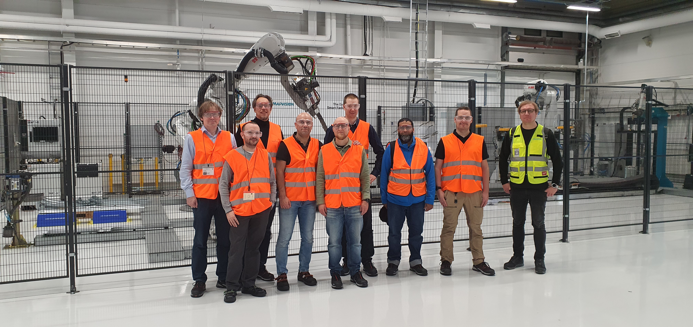
Learn Technology
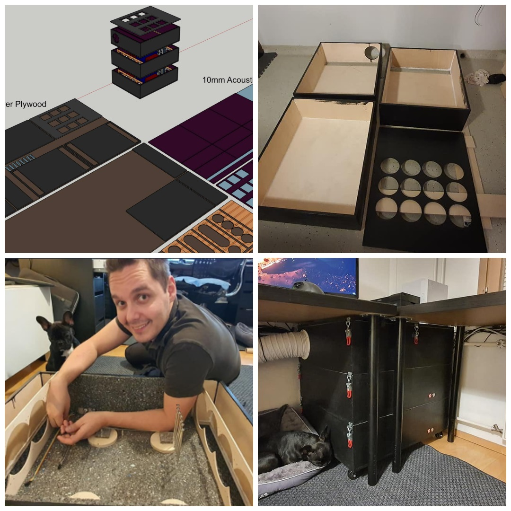
Design → Build
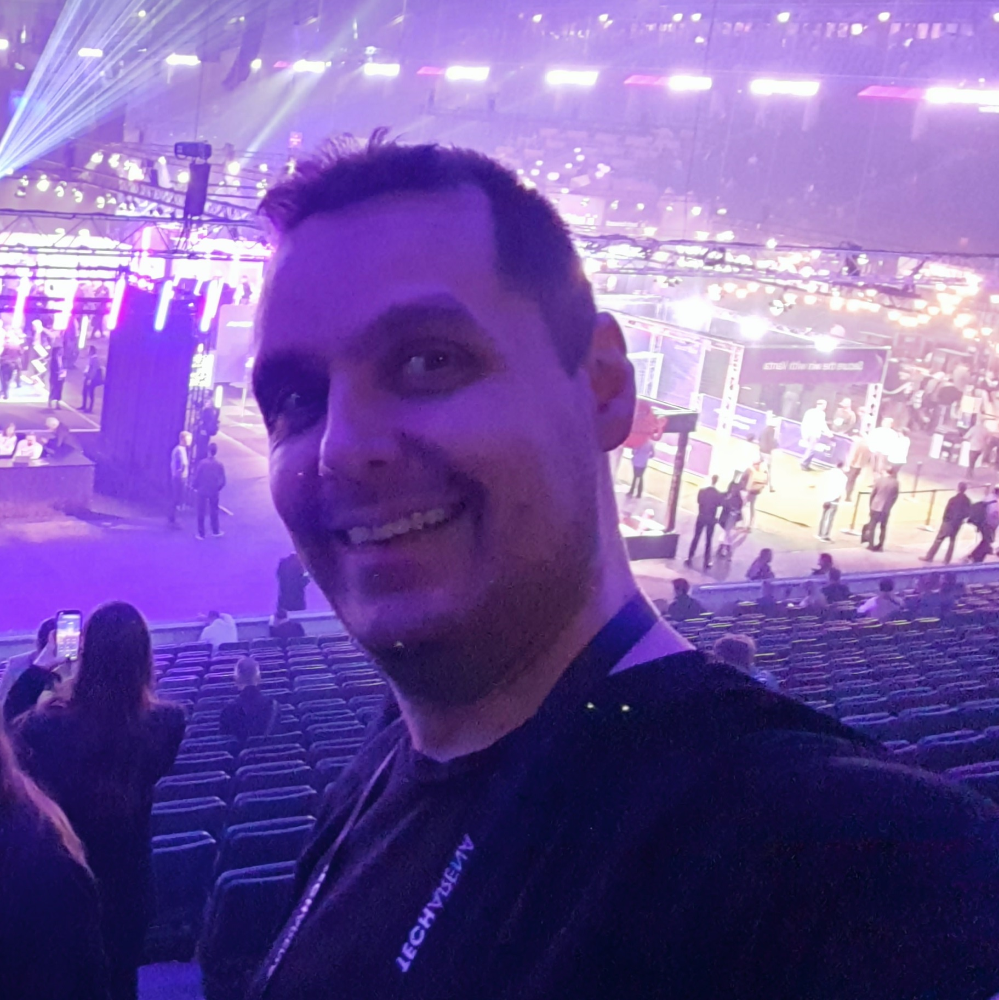
Tech Events
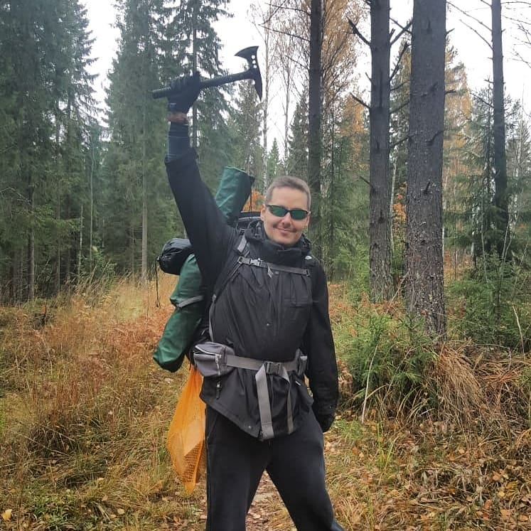
Explore
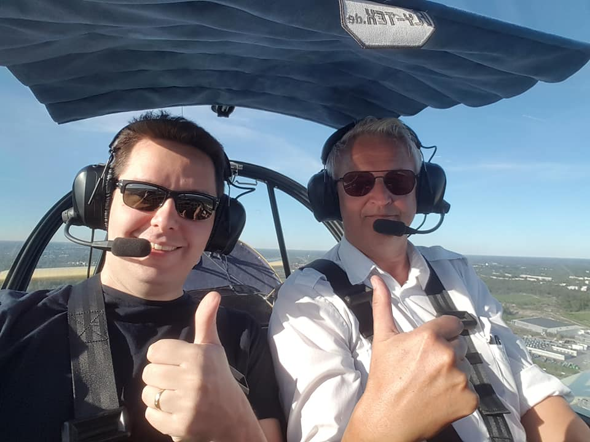
Aviation
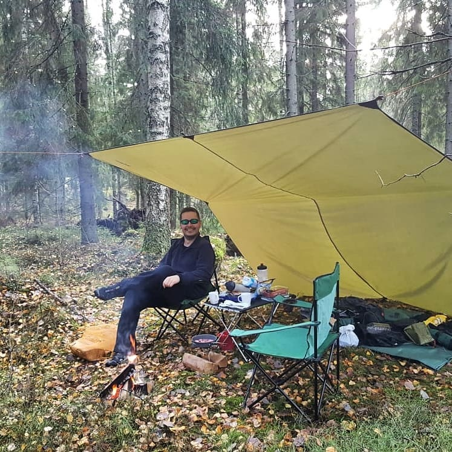
Camping
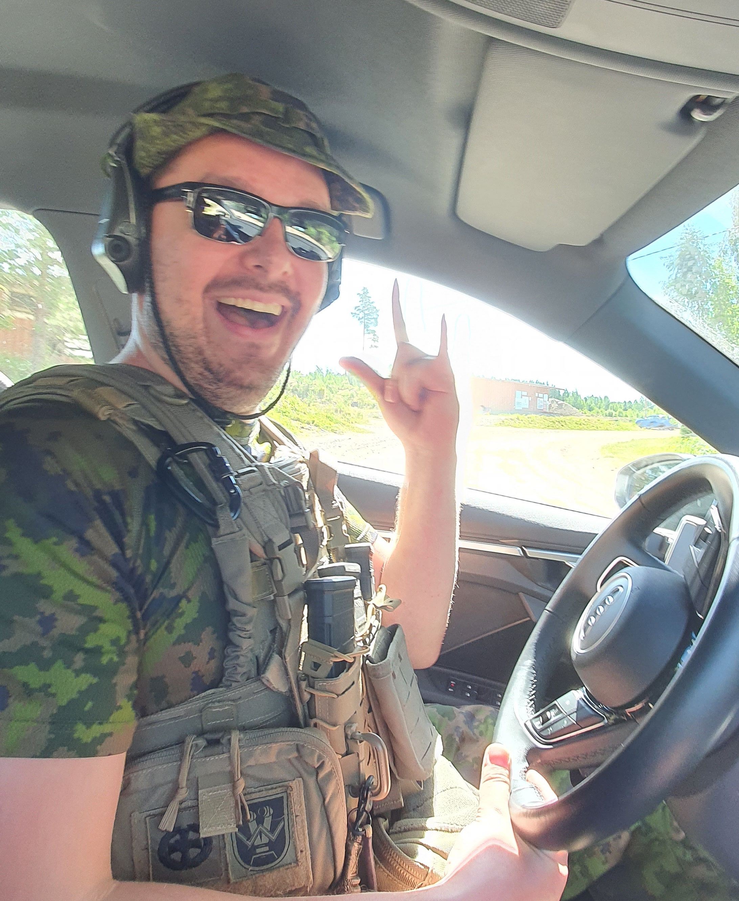
Defense
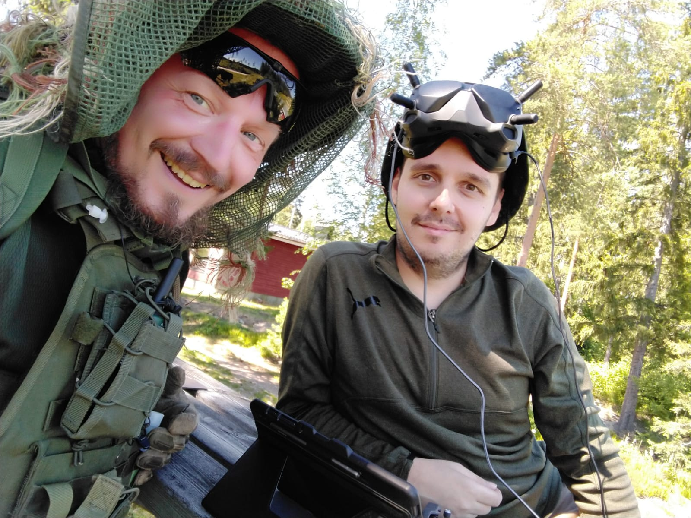
Flying FPV Drones
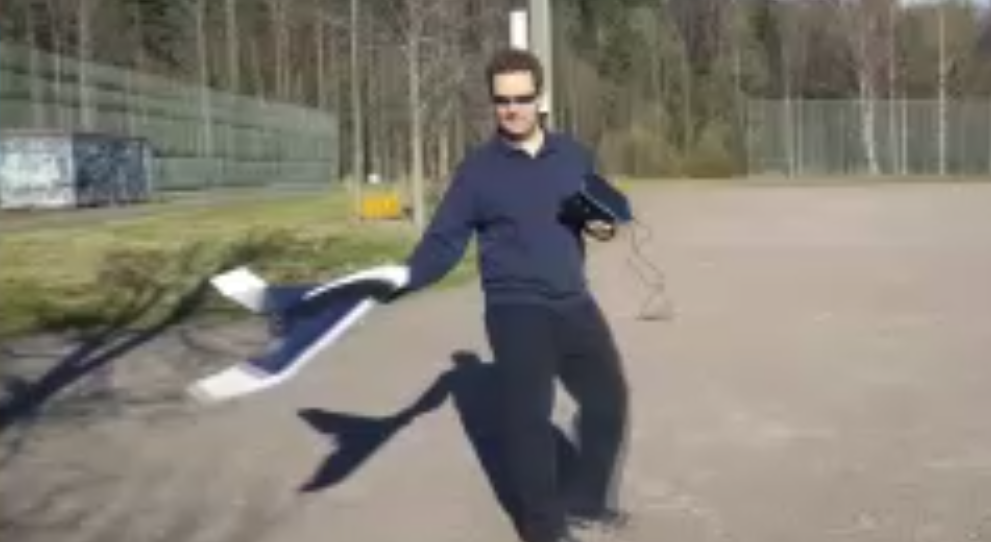
Flying Fixed Wing Drones
Learn Technology
Design → Build
Tech Events
Explore
Aviation
Camping
Defense
Flying FPV Drones
Flying Fixed Wing Drones
Open to work — starting June 1st
Let's build
Includes endorsements from CPO, CTO, Director of Product Development, and Engineering leads at Mapvision, as well as full list of certifications.
View profile →